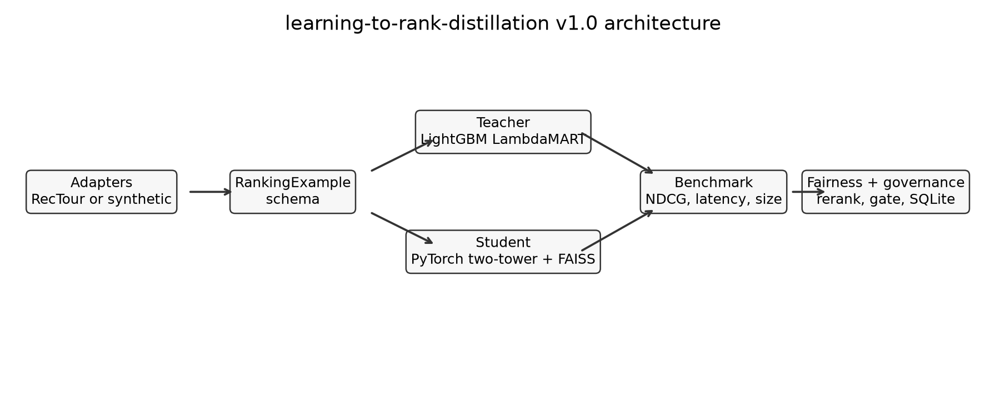
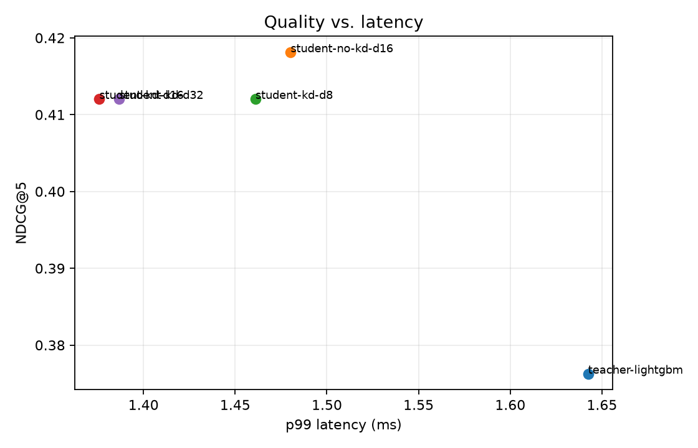
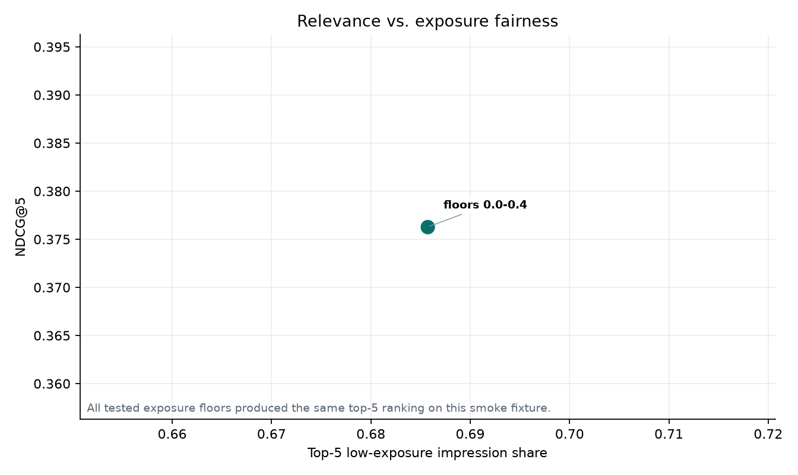
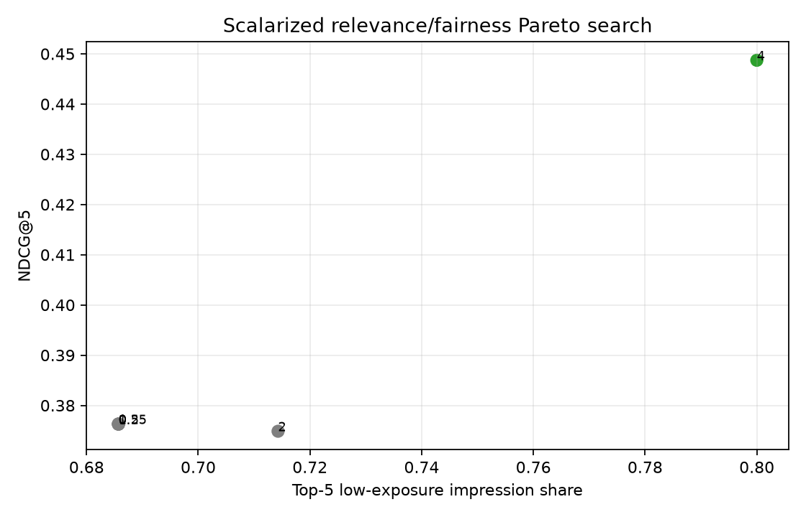

Visual learning path
Learn the project from business problem to production-shaped ranking system.
This page is the fastest way to understand the repo. It starts with the business flow, then maps the model pipeline, code boundaries, benchmark artifacts, and developer-level implementation logic.
Summary flow
The project in one pass
A search marketplace needs relevant results, low latency, exposure visibility, and repeatable model promotion. This repo turns that into a teacher-student ranking system.
Raw data
Amazon ESCI, guarded RecTour, synthetic marketplace data, or MovieLens.
RankingExample
Shared query, item, label, features, group, and position contract.
Teacher
LightGBM LambdaMART trains for ranking quality within query groups.
Student
PyTorch two-tower model learns labels and teacher behavior.
Evaluate
NDCG, latency, model size, fairness, and promotion gate checks.
Serve
Student bundle, item embeddings, API, metrics, and Docker skeleton.
Core idea
Train a strong teacher for quality, then distill into a smaller student that is shaped for retrieval and serving.
Scope boundary
This is an offline, production-shaped ranking system. It is not a live A/B testing platform or a hosted production deployment.
Detailed flow
How data becomes a ranked result
The detailed flow separates the system into dataset, model, evaluation, fairness, and production layers. Each layer has a clear input and output.
/health, /rank, and /metrics.

Architecture diagram: adapters feed the shared ranking contract, then teacher, student, evaluation, fairness, and production layers build on top.
Dataset roles
| Dataset | Role |
|---|---|
| Amazon ESCI | Primary public real-data learning-to-rank path. |
| Expedia RecTour | Secondary travel target; no claims until real files are present. |
| Synthetic | Fast, deterministic pipeline and fairness stress testing. |
| MovieLens | Optional adapter to prove the contract generalizes. |
Technical flow
The implementation map
This section maps the learning concepts to the repo files so a reader can move from the diagram to the actual code.
Core row contract
Every adapter returns RankingExample. That is the main reason model,
benchmark, fairness, and serving code can stay dataset-agnostic.
Code path
schema.pydefines the dataset-agnostic row contract.adapters/esci.pymaps Amazon ESCI rows into ranking examples.models/teacher.pytrains and saves the LightGBM LambdaMART teacher.models/student.pydefines the PyTorch two-tower student.distillation/implements no-KD, response, feature, and relation KD.benchmark/run_all.pytrains models and writes benchmark artifacts.fairness/computes exposure metrics and reranking trade-offs.production/builds bundles and serves ranked results.
Teacher training
LGBMRanker receives grouped examples and optimizes LambdaMART.
Student training
Two towers encode query and item features, then score by dot product.
Distillation
KD blends teacher signals with supervised listwise relevance loss.
Serving
Student bundle stores vectorizer, item embeddings, weights, and metadata.
Distillation methods
| Method | Signal | Question it answers |
|---|---|---|
| No-KD baseline | Labels only | How good is the student without teacher help? |
| Response KD | Teacher score distribution | Can the student match teacher outputs? |
| Feature KD | Teacher-side representation | Can the student match useful hidden representations? |
| Relation KD | Pairwise/listwise score relations | Can the student preserve ordering relationships? |
Developer walkthrough
Understand the implementation from the inside out
The code is organized around one contract: every dataset becomes
RankingExample. Once that happens, teacher training, student distillation,
evaluation, fairness, promotion, and serving all run through the same interfaces.
1. The shared row contract
All downstream code expects a query-item row with relevance, feature values, an
exposure group, and optional logging metadata. The guard that keeps
position out of features prevents leakage from observed
ranking logs into model training.
@dataclass(frozen=True, slots=True)
class RankingExample:
query_id: str
item_id: str
features: dict[str, FeatureValue]
label: float
group_id: str
is_unbiased: bool
position: int | None
def __post_init__(self) -> None:
if "position" in self.features:
raise ValueError("position must not be included as a training feature")2. Dataset selection is a thin router
The benchmark and CLI do not know whether the source is Amazon ESCI, RecTour,
MovieLens, or synthetic data. They pass a DatasetConfig into one loader,
and that loader picks the adapter.
if config.name == "esci":
return ESCIAdapter(
data_dir=config.data_dir or Path("data/esci"),
split=config.split,
).load(limit=config.limit)
if config.name == "rectour":
return RecTourAdapter(config.data_dir or Path("data/rectour")).load(limit=config.limit)3. Amazon ESCI becomes ranking examples
ESCI labels are mapped to graded relevance, product/query text is converted into
compact lexical and metadata features, and group_id uses brand when
available so fairness can reason about exposure at a supplier-like level.
LABELS = {"E": 3.0, "S": 2.0, "C": 1.0, "I": 0.0}
return RankingExample(
query_id=str(row["query_id"]),
item_id=str(row["product_id"]),
group_id=str(_clean_value(row.get("product_brand")) or product_id),
label=_label_to_relevance(row["esci_label"]),
is_unbiased=False,
position=None,
features=_features_from_row(row),
)query_title_token_overlapand similar features capture simple text match.product_id_hash_bucketgives the model a stable categorical item proxy.- Missing product metadata is allowed; the adapter only fails on unsafe schema gaps.
4. The teacher optimizes grouped ranking quality
LambdaMART needs examples ordered by query plus a group-size list. The teacher
vectorizer turns mixed numeric and categorical features into a matrix, then LightGBM
trains with objective="lambdarank".
ordered_examples, group_sizes = _ordered_examples_and_group_sizes(examples)
features = self.vectorizer.fit_transform(ordered_examples)
labels = np.asarray([example.label for example in ordered_examples], dtype=np.float32)
self.model = lgb.LGBMRanker(
objective="lambdarank",
metric="ndcg",
n_estimators=self.n_estimators,
)
self.model.fit(features, labels, group=group_sizes)5. The student is serving-shaped
The student separates query and item features into two towers. At serving time item embeddings can be precomputed, and request-time work is mainly query embedding plus nearest-neighbor search.
def forward(self, query_features: torch.Tensor, item_features: torch.Tensor) -> torch.Tensor:
query_embeddings = self.encode_query(query_features)
item_embeddings = self.encode_item(item_features)
return torch.sum(query_embeddings * item_embeddings, dim=1)6. Response KD transfers teacher behavior
Training blends two objectives: KL divergence against the teacher's softened score distribution and a supervised listwise loss against labels. This keeps the student anchored to relevance while learning teacher preferences.
kd_loss = F.kl_div(
F.log_softmax(student_scores / temperature, dim=0),
F.softmax(teacher_scores / temperature, dim=0),
reduction="batchmean",
) * (temperature**2)
supervised_loss = listwise_label_loss(student_scores, labels)
return alpha * kd_loss + (1.0 - alpha) * supervised_loss7. The benchmark is the end-to-end control loop
run_benchmark loads data, splits by query, trains the teacher, trains a
no-KD student, trains KD students across embedding sizes, evaluates latency and NDCG,
writes plots, runs fairness sweeps, and records a promotion decision.
examples = load_ranking_examples(DatasetConfig(name=dataset, data_dir=data_dir, limit=limit))
query_split = split_by_query(examples, seed=seed)
teacher = LightGBMLambdaMARTTeacher(random_state=seed, n_estimators=30).fit(query_split.train)
teacher_scores = teacher.predict(query_split.test)
no_kd_student, _ = train_no_kd_student(query_split.train, epochs=student_epochs)
kd_student, _ = train_response_based_student(query_split.train, teacher_train_scores)8. Fairness and promotion are executable checks
The fairness layer treats group_id as an exposure group and compares
relevance with top-k exposure share. The promotion gate turns candidate-vs-teacher
comparison into a logged SQLite decision instead of a subjective README claim.
run_fairness_tradeoff(
train_examples=query_split.train,
eval_examples=query_split.test,
relevance_scores=teacher_scores.tolist(),
output_dir=output_dir,
)
PromotionGate(registry_path=output_dir / "promotion_registry.sqlite").evaluate(
candidate=candidate_metrics,
teacher=teacher_metrics,
)9. Serving loads a student bundle
The FastAPI app loads a bundle, builds an item index, converts request features into a dummy query example, embeds that query with the student tower, and searches the item index for top-k results.
@app.post("/rank")
def rank(request: RankRequest) -> dict[str, Any]:
query_example = _query_example(request.query_features)
query_embeddings = loaded_bundle.student.query_embeddings([query_example])
results = item_index.search(query_embeddings, k=request.k)[0]
return {
"results": [{"item_id": item_id, "score": score} for item_id, score in results],
"bundle_version": loaded_bundle.metadata.get("data_hash"),
}10. How to exercise the full implementation
Start with tests, then run the synthetic benchmark, then the Amazon ESCI real-data
path when data/esci is present. Serving requires a locally built bundle at
artifacts/bundles/current.
make install
make test
make benchmark
ltrd benchmark --dataset esci --data-dir data/esci --limit 5000
make ablation
make dashboardImages and artifacts
How to read the generated plots
These images are committed lightweight artifacts from local benchmark paths. Treat them as learning and smoke-test evidence unless a run explicitly states real data was used.

Quality vs latency: compares ranking quality against serving cost.

Fairness trade-off: shows how exposure floors affect relevance and exposure.

Pareto frontier: highlights non-dominated relevance and fairness operating points.